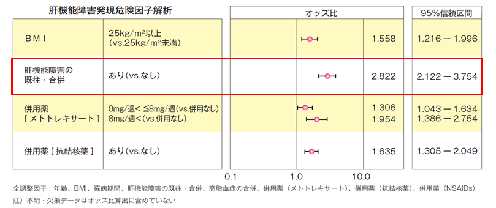

肝障害患者への投与
●肝障害患者に対する薬物動態の検討により、用量調整は必要はない
●ただし、全例調査（点滴静注用）において「肝機能障害の既往・合併」、肝障害を起こす可能性のある併用薬剤（MTX、抗結核薬）は危険因子であることから、患者の状態を定期的にモニタリングし、副作用の発現に注意をすること
【全例調査（点滴静注用）肝機能障害の発現例620 例における、多重ロジスティック回帰分析を用いた肝機能障害発現の危険因子解析】

●肝障害患者に対する薬物動態の検討により、用量調整は必要はない
●ただし、全例調査（点滴静注用）において「肝機能障害の既往・合併」、肝障害を起こす可能性のある併用薬剤（MTX、抗結核薬）は危険因子であることから、患者の状態を定期的にモニタリングし、副作用の発現に注意をすること
【全例調査（点滴静注用）肝機能障害の発現例620 例における、多重ロジスティック回帰分析を用いた肝機能障害発現の危険因子解析】